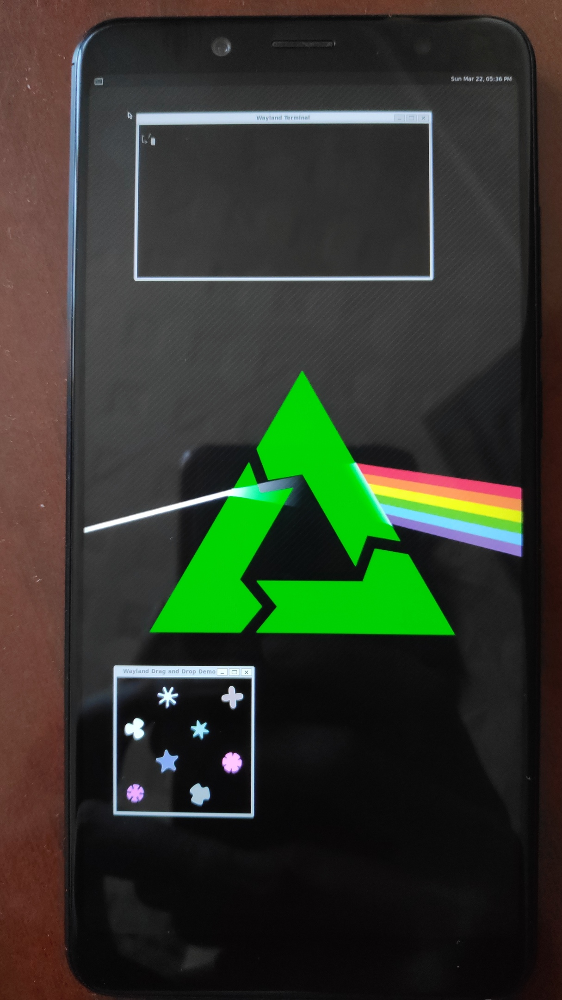

Xiaomi Redmi Note 5 Pro (xiaomi-whyred)
Jump to navigation
Jump to search
|
 Xiaomi Redmi Note 5 Pro | |
| Manufacturer | Xiaomi |
|---|---|
| Name | Redmi Note 5 Pro |
| Codename | xiaomi-whyred |
| Released | 2018 |
| Category | testing |
| Original software | Android 9 |
| postmarketOS kernel | 4.4.78 |
| Hardware | |
| Chipset | Qualcomm SDM636 Snapdragon 636 |
| CPU | Octa-core Kryo 260 1.8 GHz |
| GPU | Adreno 509 |
| Display | 2160x1080 (403 PPI) IPS |
| Storage | 64 GB |
| Memory | 4/6 GB |
| Architecture | aarch64 |
{kind=link}
| USB Networking |
Works
|
|---|---|
| Flashing | |
| Touchscreen |
Works
|
| Display |
Works
|
| WiFi | |
| FDE | |
| Mainline | |
| Battery | |
| 3D Acceleration | |
| Audio | |
| Bluetooth | |
| Camera | |
| GPS | |
| Mobile data | |
| SMS | |
| Calls | |
| USB OTG | |
| NFC | |
| Accelerometer | |
|---|---|
| Magnetometer | |
| Ambient Light | |
| Proximity | |
| Hall Effect | |
| Ir TX | |
|---|---|
| TrustZone | |
Contributors
- javabird25
Maintainer(s)
- javabird25
Users owning this device
- AAT596 (Notes: LineageOS 18.1, audio broken, internal speaker still works)
- Devajithvs (Notes: Possible Future Test subject)
- Fireman112 (Notes: Daily driver)
How to enter flash mode
- Turn off the device
- Press Power + Volume Down to enter fastboot
Installation
| CAUTION: Flashing any image with antirollback index lower than 4 (Android 8 or lower, for example) could potentially brick your device due to Anti-rollback protection. See a related XDA Developers post for more information. |
Here's how to boot pmOS via fastboot:
- Install to a SD card with
pmbootstrap install --sdcard=/dev/sdX - Insert the SD card into the device
- Connect the device to your PC
- Enter the fastboot mode
- In order to boot an image with fastboot, an 8-Kb image of zeros should be flashed to the
antirbpasspartition every time we want to usepmbootstrap flasher bootorfastboot boot. Create an image if you haven't done that already:$ dd if=/dev/zero of=dummy.img bs=8K count=1
- Flash the freshly created
dummy.imgto theantirbpasspartition:$ fastboot flash antirbpass dummy.img - Finally, boot pmOS:
$ pmbootstrap flasher boot
Alternatively, flashing a zip image through the recovery does not appear to trigger anti-rollback protection.
This has only been tested on one device with the following procedure, proceed at your own risk:
- Create a recovery zip with
pmbootstrap install --android-recovery-zip - Export the zip with
pmbootstrap export, this will create a link to the zip at/tmp/postmarketOS-export/pmos-xiaomi-whyred.zip - Copy the zip to your device and flash with the recovery of your choice, though this has only been tested on OrangeFox Recovery R11.0.
Your recovery may show some warnings during the install process and warn you that no OS is installed after flashing postmarketOS. You can ignore those warnings.
For more info on using recovery zips, see Installation from recovery mode
Accessing UART
- Disassemble the device
- Unscrew the battery connector holder
- Disconnect charging board connector (Note: UART test point is under the charging board connector so you can't use usb while accessing UART or you solder thin wires to it)
Test point locations
{kind=link}
See also
- pmaports!1088 Initial merge request
- Device package
- Kernel package